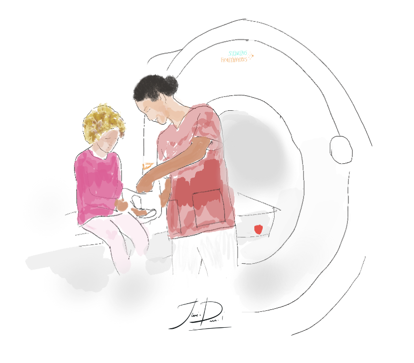

I am grateful for the opportunity to collaborate with these exceptional scientists and colleagues on my publications: Dustin Scheinost, Amin Karbasi, Margaret L Westwater, Xenophon Papademetris, Qinghao Liang, Matthew Rosenblatt, Stephanie Noble, Maya Foster, Raimundo Rodriguez, Brendan Adkinson, Jean Ye, Huili Sun, Chris Camp, Michael Farruggia, Link Tejavibulya, Wei Dai, Rongtao Jiang, Angeliki Pollatou, Heshaam Faili, Shayan A. Tabrizi, Hamed Zamani, Azadeh Shakery, and W Bruce Croft.
Additional collaborators include Valeria Pena Trujillo, Camilo Jaimes, Lilla Zöllei, Malte Hoffmann, Corey Horien, Abigail S Greene, Kangjoo Lee, Daniel S Barron, Siyuan Gao, David O’Connor, Mehraveh Salehi, Xilin Shen, Evelyn MR Lake, R Todd Constable, and Bruce Fischl.
Acronyms Explained
| MICCAI | International Conference on Medical Image Computing and Computer-Assisted Intervention |
| ISBI | IEEE International Symposium on Biomedical Imaging |
| GRAIL | Workshop on GRaphs in biomedicAl Image anaLysis |
| NPP | Nature Neuropsychopharmacology |
| CIKM | Conference on Information and Knowledge Management |
| COLING | International Conference on Computational Linguistics |
| ECIR | European Conference on Information Retrieval |
| CLEF | Conference and Labs of the Evaluation Forum |
Patents
| Title | Author | Year | Patent | Abstract |
|---|---|---|---|---|
| Method and system for information retrieval | Shayan Aliakbar Tabrizi, Azadeh Shakery, Mohammad Ali Tavallaei, Javid Dadashkarimi | 2020 | US Patent | |
|
A perspective-based search system and method is disclosed. The perspective based system allows users to select specific perspectives on a search topic and view the results from those perspectives. In addition, perspective-based searching allows users to more easily infer their own search intents with greater clarity, and without complex or multiple que ries.
link
|
||||
Journals
| Title | Author | Year | Journal | Abstract |
|---|---|---|---|---|
| Brain-phenotype predictions of language and executive function can survive across diverse real-world data: Dataset shifts in developmental populations | Brendan D. Adkinson, Matthew Rosenblatt, Javid Dadashkarimi, Link Tejavibulya, Rongtao Jiang, Stephanie Noble, Dustin Scheinost | 2024 | Developmental Cognitive Neuroscience | |
|
Predictive modeling potentially increases the reproducibility and generalizability of neuroimaging brain-phenotype associations. Yet, the evaluation of a model in another dataset is underutilized. Among studies that undertake external validation, there is a notable lack of attention to generalization across dataset-specific idiosyncrasies (i.e., dataset shifts). Research settings, by design, remove the between-site variations that real-world and, eventually, clinical applications demand. Here, we rigorously test the ability of a range of predictive models to generalize across three diverse, unharmonized developmental samples: the Philadelphia Neurodevelopmental Cohort (n=1291), the Healthy Brain Network (n=1110), and the Human Connectome Project in Development (n=428). These datasets have high inter-dataset heterogeneity, encompassing substantial variations in age distribution, sex, racial and ethnic minority representation, recruitment geography, clinical symptom burdens, fMRI tasks, sequences, and behavioral measures. Through advanced methodological approaches, we demonstrate that reproducible and generalizable brain-behavior associations can be realized across diverse dataset features. Results indicate the potential of functional connectome-based predictive models to be robust despite substantial inter-dataset variability. Notably, for the HCPD and HBN datasets, the best predictions were not from training and testing in the same dataset (i.e., cross-validation) but across datasets. This result suggests that training on diverse data may improve prediction in specific cases. Overall, this work provides a critical foundation for future work evaluating the generalizability of brain-phenotype associations in real-world scenarios and clinical settings.
link.
|
||||
| Connectome-based prediction of craving in gambling disorder and cocaine use disorder | Stephanie Antons, Sarah W. Yip, Cheryl M. Lacadie, Javid Dadashkarimi, Dustin Scheinost, Matthias Brand, Marc N. Potenza | 2023 | Journal of Behavioral Addictions | |
|
Craving is a central feature of substance use disorders and disorders due to addictive behaviors. Considerable research has investigated neural mechanisms involved in the development and processing of craving. Recently, connectome-based predictive modeling, a data-driven method, has been used in four studies aiming to predict craving related to substance use, addictive behaviors, and food. Studies differed in methods, samples, and conceptualizations of craving. Within the commentary we aim to compare, contrast and consolidate findings across studies by considering conceptual and methodological features of the studies. We derive a theoretical model on the functional connectivity-craving relationships across studies.
link
|
||||
| Cross Atlas Remapping via Optimal Transport (CAROT): Creating connectomes for any atlas when raw data is not available | Javid Dadashkarimi et al. | 2023 | MEDIA | |
|
Open-source, publicly available neuroimaging datasets – whether from large-scale data collection efforts or pooled from multiple smaller studies – offer unprecedented sample sizes and promote generalization efforts. Releasing data can democratize science, increase the replicability of findings, and lead to discoveries. Partly due to patient privacy, computational, and data storage concerns, researchers typically release preprocessed data with the voxelwise time series parcellated into a map of predefined regions, known as an atlas. However, releasing preprocessed data also limits the choices available to the end-user. This is especially true for connectomics, as connectomes created from different atlases are not directly comparable. Since there exist several atlases with no gold standards, it is unrealistic to have processed, open-source data available from all atlases. Together, these limitations directly inhibit the potential benefits of open-source neuroimaging data. To address these limitations, we introduce Cross Atlas Remapping via Optimal Transport (CAROT) to find a mapping between two atlases. This approach allows data processed from one atlas to be directly transformed into a connectome based on another atlas without the need for raw data access. To validate CAROT, we compare reconstructed connectomes against their original counterparts (i.e., connectomes generated directly from an atlas), demonstrate the utility of transformed connectomes in downstream analyses, and show how a connectome-based predictive model can generalize to publicly available data that was processed with different atlases. Overall, CAROT can reconstruct connectomes from an extensive set of atlases – without needing the raw data – allowing already processed connectomes to be easily reused in a wide range of analyses while eliminating redundant processing efforts.
link
|
||||
| Predicting the Future of Neuroimaging Predictive Models in Mental Health | Link Tejavibulya, Link Tejavibulya, Max Rolison, Siyuan Gao, Qinghao Liang, Hannah Peterson, Javid Dadashkarimi et al. | 2022 | Molecular Psychiatry | |
|
Predictive modeling using neuroimaging data has the potential to improve our understanding of the neurobiology underlying psychiatric disorders and putatively information interventions. Accordingly, there is a plethora of literature reviewing published studies, the mathematics underlying machine learning, and the best practices for using these approaches. As our knowledge of mental health and machine learning continue to evolve, we instead aim to look forward and “predict” topics that we believe will be important in current and future studies. Some of the most discussed topics in machine learning, such as bias and fairness, the handling of dirty data, and interpretable models, may be less familiar to the broader community using neuroimaging-based predictive modeling in psychiatry. In a similar vein, transdiagnostic research and targeting brain-based features for psychiatric intervention are modern topics in psychiatry that predictive models are well-suited to tackle. In this work, we target an audience who is a researcher familiar with the fundamental procedures of machine learning and who wishes to increase their knowledge of ongoing topics in the field. We aim to accelerate the utility and applications of neuroimaging-based predictive models for psychiatric research by highlighting and considering these topics. Furthermore, though not a focus, these ideas generalize to neuroimaging-based predictive modeling in other clinical neurosciences and predictive modeling with different data types (e.g., digital health data).
link
|
||||
| Transdiagnostic, Connectome-Based Prediction of Memory Constructs Across Psychiatric Disorders | Daniel S Barron, Siyuan Gao, Javid Dadashkarimi et al. | 2021 | Cerebral Cortex | |
|
Memory deficits are observed in a range of psychiatric disorders, but it is unclear whether memory deficits arise from a shared brain correlate across disorders or from various dysfunctions unique to each disorder. Connectome-based predictive modeling is a computational method that captures individual differences in functional connectomes associated with behavioral phenotypes such as memory. We used publicly available task-based functional MRI data from patients with schizophrenia (n = 33), bipolar disorder (n = 34), attention deficit hyper-activity disorder (n = 32), and healthy controls (n = 73) to model the macroscale brain networks associated with working, short- and long-term memory. First, we use 10-fold and leave-group-out analyses to demonstrate that the same macroscale brain networks subserve memory across diagnostic groups and that individual differences in memory performance are related to individual differences within networks distributed throughout the brain, including the subcortex, default mode network, limbic network, and cerebellum. Next, we show that diagnostic groups are associated with significant differences in whole-brain functional connectivity that are distinct from the predictive models of memory. Finally, we show that models trained on the transdiagnostic sample generalize to novel, healthy participants (n = 515) from the Human Connectome Project. These results suggest that despite significant differences in whole-brain patterns of functional connectivity between diagnostic groups, the core macroscale brain networks that subserve memory are shared.
link
|
||||
| A Hitchhiker’s Guide to Working with Large, Open-Source Neuroimaging Datasets | Corey Horien, Stephanie Noble, Abigail S Greene, Kangjoo Lee, Daniel S Barron, Siyuan Gao, David O’Connor, Mehraveh Salehi, Javid Dadashkarimi, Xilin Shen, Evelyn MR Lake, R Todd Constable, Dustin Scheinost | 2021 | Nature Human Behavior | |
|
Large datasets that enable researchers to perform investigations with unprecedented rigor are growing increasingly common in neuroimaging. Due to the simultaneous increasing popularity of open science, these state-of-the-art datasets are more accessible than ever to researchers around the world. While analysis of these samples has pushed the field forward, they pose a new set of challenges that might cause difficulties for novice users. Here we offer practical tips for working with large datasets from the end-user’s perspective. We cover all aspects of the data lifecycle: from what to consider when downloading and storing the data to tips on how to become acquainted with a dataset one did not collect and what to share when communicating results. This manuscript serves as a practical guide one can use when working with large neuroimaging datasets, thus dissolving barriers to scientific discovery.
link
|
||||
| Functional Connectivity During Frustration: A Preliminary Study of Predictive Modeling of Irritability in Youth | Dustin Scheinost, Javid Dadashkarimi et al. | 2021 | Nature NPP | |
|
Irritability cuts across many pediatric disorders and is a common presenting complaint in child psychiatry; however, its neural mechanisms remain unclear. One core pathophysiological deficit of irritability is aberrant responses to frustrative nonreward. Here, we conducted a preliminary fMRI study to examine the ability of functional connectivity during frustrative nonreward to predict irritability in a transdiagnostic sample. This study included 69 youths (mean age = 14.55 years) with varying levels of irritability across diagnostic groups: disruptive mood dysregulation disorder (n = 20), attention-deficit/hyperactivity disorder (n = 14), anxiety disorder (n = 12), and controls (n = 23). During fMRI, participants completed a frustrating cognitive flexibility task. Frustration was evoked by manipulating task difficulty such that, on trials requiring cognitive flexibility, “frustration” blocks had a 50% error rate and some rigged feedback, while “nonfrustration” blocks had a 10% error rate. Frustration and nonfrustration blocks were randomly interspersed. Child and parent reports of the affective reactivity index were used as dimensional measures of irritability. Connectome-based predictive modeling, a machine learning approach, with tenfold cross-validation was conducted to identify networks predicting irritability. Connectivity during frustration (but not nonfrustration) blocks predicted child-reported irritability (ρ = 0.24, root mean square error = 2.02, p = 0.03, permutation testing, 1000 iterations, one-tailed). Results were adjusted for age, sex, medications, motion, ADHD, and anxiety symptoms. The predictive networks of irritability were primarily within motor-sensory networks; among motor-sensory, subcortical, and salience networks; and between these networks and frontoparietal and medial frontal networks. This study provides preliminary evidence that individual differences in irritability may be associated with functional connectivity during frustration, a phenotype-relevant state.
link
|
||||
| An Expectation-Maximization Algorithm for Query Translation Based on Pseudo-Relevant Documents | Javid Dadashkarimi , Hamed Zamani et al. | 2016 | Information Processing & Management | |
|
Query translation in cross-language information retrieval (CLIR) can be done by employing dictionaries, aligned corpora, or machine translators. Scarcity of aligned corpora for various domains in many language pairs intensifies the importance of dictionary-based CLIR which motivates us to use only a bilingual dictionary and two independent collections in source and target languages for query translation. We exploit pseudo-relevant documents for a given query in the source language and pseudo-relevant documents for a translation of the query in the target language with a proposed expectation-maximization algorithm for improving query translation. The proposed method (called EM4QT) assumes that each target term either is translated from the source pseudo-relevant documents or has come from a noisy collection. Since EM4QT does not directly consider term coherency, which is defined as fluency of the target translation, we investigate a crucial question: can EM4QT be improved using either coherency-based methods or token-to-token translation ones? To address this question, we combine different translation models via simple linear interpolation and a proposed divergence minimization method. Evaluations over four CLEF collections in Persian, French, Spanish, and German indicate that EM4QT significantly outperforms competitive baselines in all the collections. Our experiments also reveal that since EM4QT indirectly considers term coherency, combining the method with coherency-based models cannot significantly improve the retrieval performance. On the other hand, investigating the query-by-query results supports the view that EM4QT usually gives a relatively high weight to one translation and its combination with the proposed token-to-token translation model, which is obtained by running EM4QT for each query term separately, soothes the effect and reaches better results for many queries. Comparing the method with a competitive word-embedding baseline reveals the superiority of the proposed model.
link
|
||||
Proceedings
| Title | Author | Year | Journal | Abstract |
|---|---|---|---|---|
| Search Wide, Focus Deep: Automated Fetal Brain Extraction With Sparse Training Data | Javid Dadashkarimi . . . , Lilla Zollei, Malte Hoffmann | 2024 | arxiv | |
|
Automated fetal brain extraction from full-uterus MRI is a
challenging task due to variable head sizes, orientations, complex
anatomy, and prevalent artifacts. While deep-learning
(DL) models trained on synthetic images have been successful
in adult brain extraction, adapting these networks for fetal
MRI is difficult due to the sparsity of labeled data, leading
to increased false-positive predictions. To address this
challenge, we propose a test-time strategy that reduces false
positives in networks trained on sparse, synthetic labels. The
approach uses a breadth-fine search (BFS) to identify a subvolume
likely to contain the fetal brain, followed by a deepfocused
sliding window (DFS) search to refine the extraction,
pooling predictions to minimize false positives. We train
models at different window sizes using synthetic images derived
from a small number of fetal brain label maps, augmented
with random geometric shapes. Each model is trained
on diverse head positions and scales, including cases with
partial or no brain tissue. Our framework matches state-ofthe-
art brain extraction methods on clinical HASTE scans
of third-trimester fetuses, and exceeds them by up to 5% in
terms of Dice in the second trimester as well as EPI scans
across both trimesters. Our results demonstrate the utility of
a sliding-window approach and combining predictions from
several models trained on synthetic images, for improving
brain-extraction accuracy by progressively refining regions of
interest and minimizing the risk of missing brain mask slices
or misidentifying other tissues as brain.
|
||||
| Enhancement attacks in biomedical machine learning | Matthew Rosenblatt, Javid Dadashkarimi, Dustin Scheinost | 2022 | Workshop on Clinical Image-Based Procedures | |
|
The prevalence of machine learning in biomedical research is rapidly growing, yet the trustworthiness of such research is often overlooked. While some previous works have investigated the ability of adversarial attacks to degrade model performance in medical imaging, the ability to falsely improve performance via recently-developed “enhancement attacks” may be a greater threat to biomedical machine learning. In the spirit of developing attacks to better understand trustworthiness, we developed two techniques to drastically enhance prediction performance of classifiers with minimal changes to features: 1) general enhancement of prediction performance, and 2) enhancement of a particular method over another. Our enhancement framework falsely improved classifiers’ accuracy from 50% to almost 100% while maintaining high feature similarities between original and enhanced data (Pearson’s r′s > 0.99). Similarly, the method-specific enhancement framework was effective in falsely improving the performance of one method over another. For example, a simple neural network outperformed logistic regression by 17% on our enhanced dataset, although no performance differences were present in the original dataset. Crucially, the original and enhanced data were still similar (r = 0.99). Our results demonstrate the feasibility of minor data manipulations to achieve any desired prediction performance, which presents an interesting ethical challenge for the future of biomedical machine learning. These findings emphasize the need for more robust data provenance tracking and other precautionary measures to ensure the integrity of biomedical machine learning research. Code is available at https://github.com/mattrosenblatt7/enhancement_EPIMI.
Link
|
||||
| Connectome-based prediction of craving in gambling disorder and cocaine use disorder | Stephanie Antons, . . . , Javid DadashkarimiDustin Scheinost, Matthias Brand, Marc N Potenza | 2024 | Workshop on Clinical Image-Based Procedures | |
|
Craving, involving intense and urgent desires to engage in specific behaviours, is a feature of addictions. Multiple studies implicate regions of salience/limbic networks and basal ganglia, fronto-parietal, medial frontal regions in craving in addictions. However, prior studies have not identified common neural networks that reliably predict craving across substance and behavioural addictions.
Link
|
||||
| Combining multiple atlases to estimate data-driven mappings between functional connectomes using optimal transport | Javid Dadashkarimi, Amin Karbasi, Dustin Scheinost | 2022 | MICCAI | |
|
Connectomics is a popular approach for understanding the
brain with neuroimaging data. Yet, a connectome generated from one
atlas is different in size, topology, and scale compared to a connectome
generated from another atlas. These differences hinder interpreting, generalizing, and combining connectomes and downstream results from different atlases. Recently, it was proposed that a mapping between atlases
can be estimated such that connectomes from one atlas (i.e., source
atlas) can be reconstructed into a connectome from a different atlas
(i.e., target atlas) without re-processing the data. This approach used
optimal transport to estimate the mapping between one source atlas
and one target atlas. Yet, restricting the optimal transport problem to
only a single source atlases ignores additional information when multiple source atlases are available, which is likely. Here, we propose a novel
optimal transport based solution to combine information from multiple source atlases to better estimate connectomes for the target atlas.
Reconstructed connectomes based on multiple source atlases are more
similar to their “gold-standard” counterparts and better at predicting
IQ than reconstructed connectomes based on a single source mapping.
Importantly, these results hold for a wide-range of different atlases. Overall, our approach promises to increase the generalization of connectomebased results across different atlases.
Link
|
||||
| Transforming connectomes to any parcellation via graph matching | Qinghao Liang, Javid Dadashkarimi, Wei Dai, Amin Karbasi, Joseph Chang, Harrison H. Zhou, Dustin Scheinost | 2022 | GRAIL Workshop at MICCAI | |
|
Brain connectomes—the structural or functional connections between distinct brain regions—are widely used for neuroimaging studies. However, different ways of brain parcellation are proposed and used by different research groups without any consensus of their superiority. The variety of choices in brain parcellation makes data sharing and result comparison between studies difficult. Here, we propose a framework for transforming connectomes from one parcellation to another to address this problem. The optimal transport between nodes of two parcellations is learned in a data-driven way using graph matching methods. Spectral embedding is applied to the source connectomes to obtain node embeddings. These node embeddings are then transformed into the target space using the optimal transport. The target connectomes are estimated using the transformed node embeddings. We test the effectiveness of the proposed framework by learning the optimal transport based on data from the Human Connectome Project Young Adult, and applying it to structural connectomes data from the Lifespan Human Connectome Project Development. The efficacy of our approach is validated by comparing the estimated connectomes against their counterparts (connectomes generated directly from the target parcellation) and testing the pre-trained predictive models on estimated connectomes. We show that the estimated connectomes are highly correlated with the actual data, and predictive models for age achieve high accuracies. Overall, our proposed framework holds great promises in facilitating the generalization of connectome-based models across different parcellations.
Link
|
||||
| Data-driven mapping between functional connectomes using optimal transport | Javid Dadashkarimi, Amin Karbasi, Dustin Scheinost | 2021 | MICCAI | |
|
Functional connectomes derived from functional magnetic resonance imaging have long been used to understand the functional organization of the brain. Nevertheless, a connectome is intrinsically linked to the atlas used to create it. In other words, a connectome generated from one atlas is different in scale and resolution compared to a connectome generated from another atlas. Being able to map connectomes and derived results between different atlases without additional pre-processing is a crucial step in improving interpretation and generalization between studies that use different atlases. Here, we use optimal transport, a powerful mathematical technique, to find an optimum mapping between two atlases. This mapping is then used to transform time series from one atlas to another in order to reconstruct a connectome. We validate our approach by comparing transformed connectomes against their “gold-standard” counterparts (i.e., connectomes generated directly from an atlas) and demonstrate the utility of transformed connectomes by applying these connectomes to predictive models based on a different atlas. We show that these transformed connectomes are significantly similar to their “gold-standard” counterparts and maintain individual differences in brain-behavior associations, demonstrating both the validity of our approach and its utility in downstream analyses. Overall, our approach is a promising avenue to increase the generalization of connectome-based results across different atlases.
Link
|
||||
| A mass multivariate edge-wise approach for combining multiple connectomes to improve the detection of group differences | Javid Dadashkarimi, Siyuan Gao, Erin Yeagle, Stephanie Noble, Dustin Scheinost | 2019 | Connectomics Workshop at MICCAI | |
|
Functional connectivity derived from functional magnetic resonance imaging data has been extensively used to characterize individual and group differences. While these connectomes have traditionally been constructed using resting-state data, recent work has highlighted the importance of combining multiple task connectomes, particularly for identifying individual differences. Yet, these methods have not yet been extended to investigate differences at the group level. Here, we propose a mass multivariate edge-wise approach to improve the detection of group differences by combining connectomes from multiple sources. For each edge, the magnitude of connection strength from each of multiple connectomes are included in statistical hypothesis testing. We evaluate the proposed approach by estimating sex differences in two large, publicly available datasets: the Human Connectome Project and Philadelphia Neurodevelopmental Cohort. Results indicate the proposed mass multivariate edge-wise analysis offers improved detection of group differences compared to univariate analysis, and support the utility of combining multiple connectomes to improve detection of group differences.
Link
|
||||
| Dimension projection among languages based on pseudo-relevant documents for query translation | Javid Dadashkarimi, Mahsa S. Shahshahani, Amirhossein Tebbifakhr, Heshaam Faili, Azadeh Shakery | 2016 | ECIR | |
|
Using top-ranked documents retrieved in response to a query of a user has been shown to be an effective approach to improve the quality of query translation in dictionary-based cross-language information retrieval. In this paper, we propose a new method for dictionary-based query translation based on dimension projection of embedded vectors from the pseudo-relevant documents in the source language to their equivalents in the target language. To this end, first we learn low-dimensional vectors of the words in the pseudo-relevant collections separately and then aim to find a query-dependent transformation matrix between the vectors of translation pairs appeared in the collections. At the next step, the representation of each query term is projected to the target language and then, after using a softmax function, a translation model is built. Finally, the model is used for query translation. Our experiments on four CLEF collections in French, Spanish, German, and Italian demonstrate that the proposed method outperforms competitive baselines including a word embedding baseline based on bilingual shuffling. The proposed method reaches up to 87% performance of machine translation (MT) in short queries and considerable improvements in verbose queries.
Link
|
||||
| Pseudo-relevance feedback based on matrix factorization | Hamed Zamani, Javid Dadashkarimi, . . . , W Bruce Croft | 2016 | CIKM | |
|
In information retrieval, pseudo-relevance feedback (PRF) refers to a strategy for updating the query model using the top retrieved documents. PRF has been proven to be highly effective in improving the retrieval performance. In this paper, we look at the PRF task as a recommendation problem: the goal is to recommend a number of terms for a given query along with weights, such that the final weights of terms in the updated query model better reflect the terms' contributions in the query. To do so, we propose RFMF, a PRF framework based on matrix factorization which is a state-of-the-art technique in collaborative recommender systems. Our purpose is to predict the weight of terms that have not appeared in the query and matrix factorization techniques are used to predict these weights. In RFMF, we first create a matrix whose elements are computed using a weight function that shows how much a term discriminates the query or the top retrieved documents from the collection. Then, we re-estimate the created matrix using a matrix factorization technique. Finally, the query model is updated using the re-estimated matrix. RFMF is a general framework that can be employed with any retrieval model. In this paper, we implement this framework for two widely used document retrieval frameworks: language modeling and the vector space model. Extensive experiments over several TREC collections demonstrate that the RFMF framework significantly outperforms competitive baselines. These results indicate the potential of using other recommendation techniques in this task.
Link
|
||||